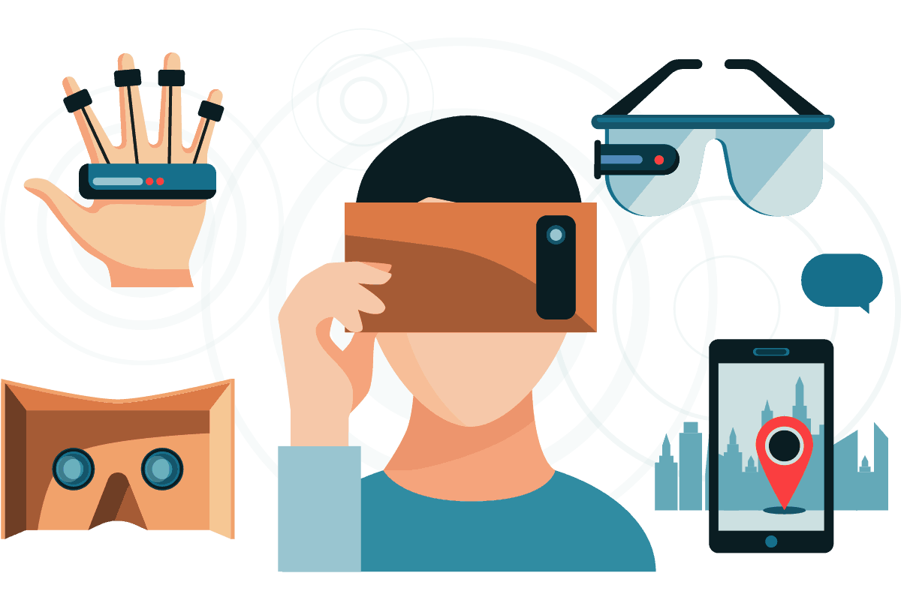
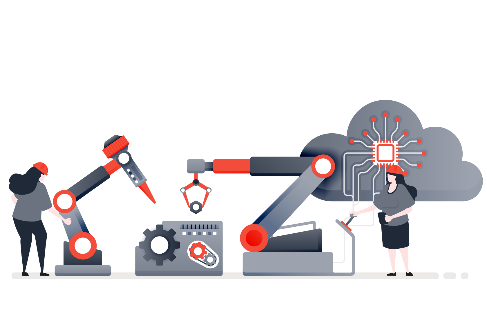

Even as new technologies are developed, innovation around the application of existing technology is rapidly changing how organisations operate and how we interact with the world. Leaps in computing capacity, data capture and connectivity are accelerating this change. Here are five areas to watch in 2022 and beyond…
Artificial intelligence
AI is about machines with human attributes - speaking, reading, seeing and even recognising emotion - completing tasks while also "learning" from repeated interactions. Using algorithms that adapt to location, speech or user-history machines can perform tasks that are dangerous or tedious, more accurately or much faster than humans.

Within a few years, analysts predict that all software will use AI at some level, according to US research and advisory firm Gartner. Importantly AI offers the opportunity to continuously tailor products and services providing a competitive advantage over rivals that is not easily copied. The question to ask is 'how can AI help my organisation?
Augmented reality
Systems that combine real-time 3D vision, sound, haptics (the sense of touch), location data and even other senses such as smell enable people to immerse themselves somewhere else, react to what's around them and alter their virtual environment in real-time
Organisations are increasingly applying this technology across a wide spectrum of human activity from art and entertainment to commerce, education and the military. It's used to train doctors, nurses, teachers and police officers and will soon be available on your smart device. Could you use AR to lift efficiency for your internal stakeholders or help you communicate with your customer base?
Blockchain
The fortunes of digital currency Bitcoin have drawn public attention to Blockchain technology, but this secure system for recording and verifying transactions and storing trusted records has the potential to disrupt enterprises of many kinds.
Companies are using Blockchain technology to transform time-consuming, centralised, less reliable and less secure systems. Digital democracy platform MyVote, for example, uses Blockchain to store users' personal data and voting history to give citizens a more direct voice in the political process. Could you use Blockchain to keep your data secure?
Automation
Robots in manufacturing go back to the 1960s. Now it's the scale and breadth of the transformation that automated systems make possible, as a result of other advances in machine learning and connectivity, for example, that puts automation firmly at the forefront of technology trends. From convenient devices at home to industrial applications on a massive scale, automation will be a key focus of technological change, with potentially far-reaching economic and social consequences.
Currently, professional services such as the legal and finance industry are being disrupted by automation with feedback from these sectors being that core technical skills together with management and people skills being more important than ever. How will automation disrupt your industry?
Internet of Things
Gartner calls the combination of technologies and the connection of people, devices, content and services the "intelligent digital mesh." This is the foundation for new business models, platforms and possibilities that will transform how we live and work with implications that go far beyond the technology itself and involve disciplines such as law, economics, business and politics.
It is early days for the application of IoT strategy but it is clear that opportunities will exist for those with the technical knowledge to connect platforms as well as those with the data analytics skills to utilise the rich stream of information generated by IoT applications. What could you learn from connecting and analysing the data from your products or elements of your core operations?